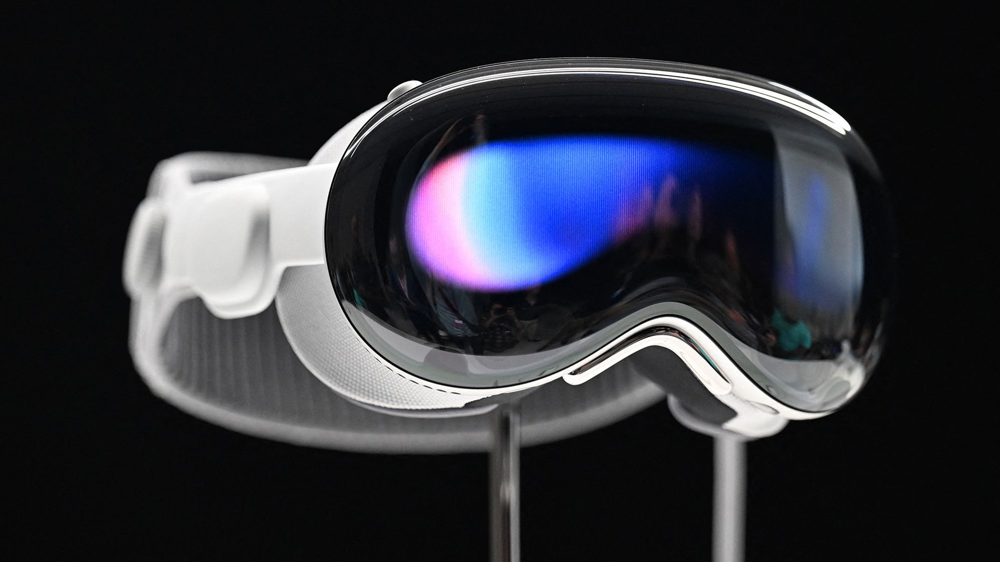
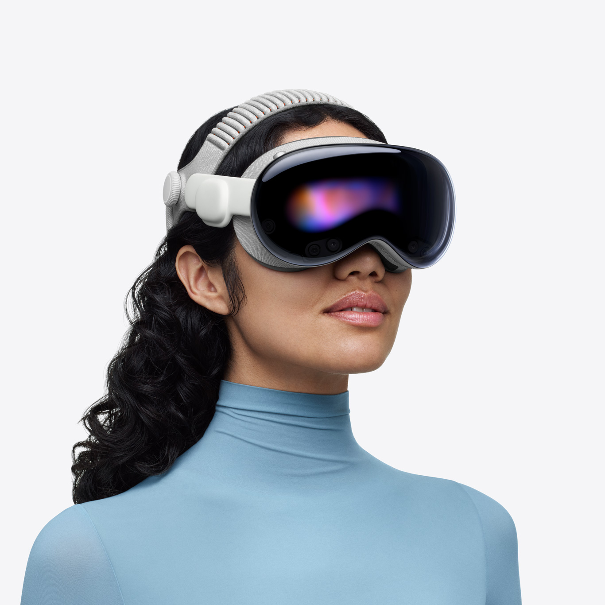
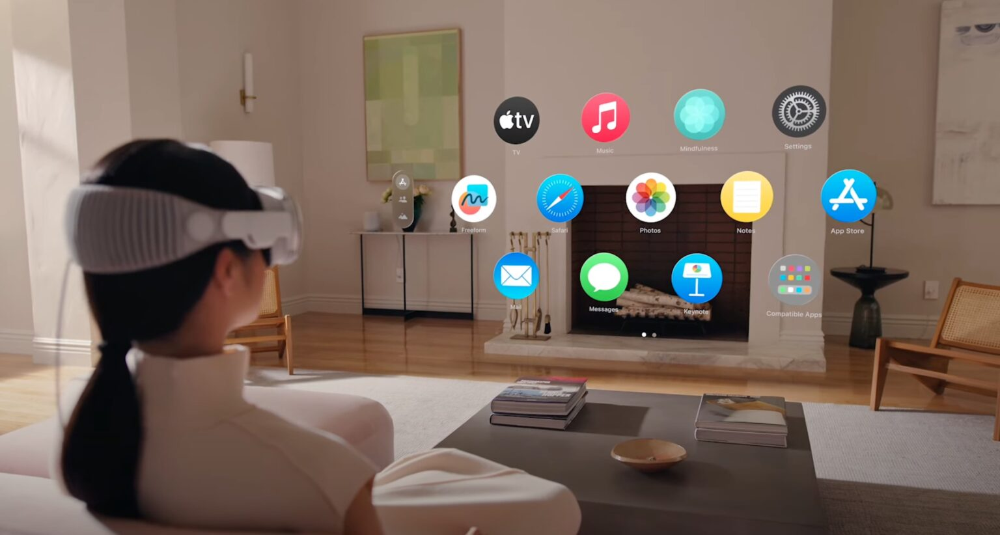
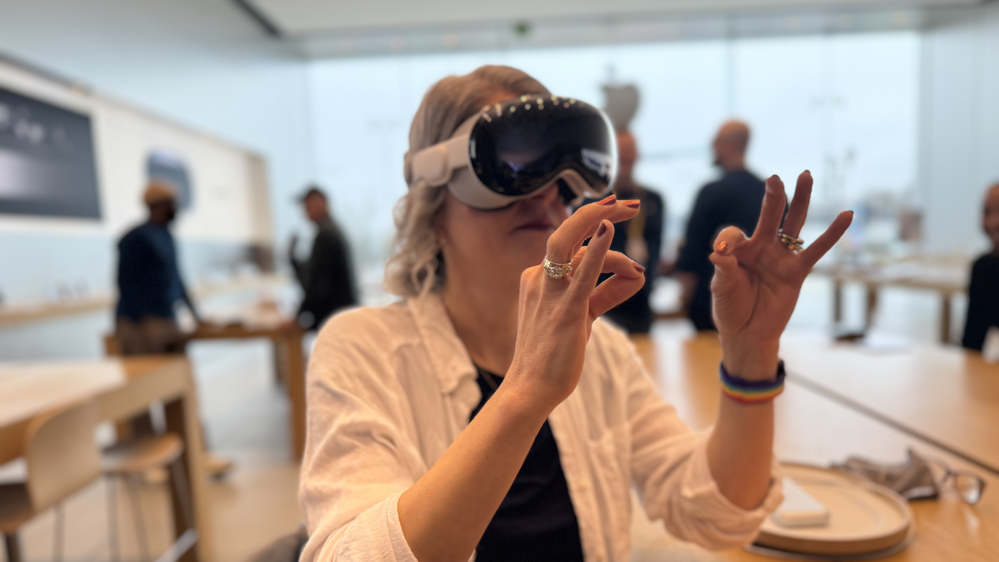

Dispositivo de interacción persona-ordenador
Apple Vision Pro
Un ordenador que se maneja con la mirada, las manos y la voz, sin ratón, sin teclado y sin mando.

- Fabricante
- Apple
- Tipo
- Visor de computación espacial
- Lanzamiento
- Febrero de 2024 (EE. UU.); renovado con chip M5 en 2025
- Sistema
- visionOS
- Entradas
- Mirada, gestos de manos, voz
Por qué lo he incluido
Las Vision Pro cambian el modo en que "se habla" con un ordenador. En lugar de mover un puntero por una pantalla plana, el usuario mira un elemento para seleccionarlo, junta los dedos para pulsarlo y puede dictar texto. Las aplicaciones aparecen como ventanas flotando en la habitación real.
Me parece un ejemplo muy claro de interfaz natural: aprovecha acciones que ya hacemos sin pensar (mirar y señalar) y elimina el aprendizaje de un periférico. Además abre posibilidades de accesibilidad, ya que puede manejarse solo con los ojos, con la voz o con otros métodos alternativos.
Beneficios principales
- Control sin periféricos. Los sensores de seguimiento ocular y de manos sustituyen a ratón y mandos.
- Espacio de trabajo ilimitado. Las ventanas se colocan alrededor del usuario en lugar de estar limitadas por el tamaño del monitor.
- Mezcla de lo real y lo virtual. Las cámaras muestran el entorno, de modo que se puede interactuar sin aislarse del todo.
- Accesibilidad. Admite varias formas de entrada para personas con distintas capacidades motrices.
Fotos



De dónde viene: evolución de la interacción
El visor no nace de la nada. Es el último paso de una larga búsqueda para que la persona tenga que adaptarse cada vez menos a la máquina.
-
Tarjetas perforadas y terminales de texto (años 50-70)
Se daban órdenes mediante tarjetas o comandos escritos. Había que saber el lenguaje de la máquina.
-
Teclado, ratón e interfaz gráfica (1964-1984)
Douglas Engelbart inventó el ratón y el Macintosh lo popularizó. Permitió señalar iconos en lugar de memorizar comandos, aunque exige coordinar la mano con un puntero en 2D.
-
Pantallas táctiles y móviles (años 2000-2010)
El dedo pasa a ser el puntero y se tocan directamente los objetos. Sigue limitado a una pantalla pequeña y plana.
-
Realidad virtual con mandos (2012-2023)
Dispositivos como Oculus Rift o HTC Vive ofrecieron entornos 3D inmersivos, pero dependían de mandos que había que sostener y aprender a usar.
-
Computación espacial: Vision Pro (2024)
Sustituye a los mandos por la mirada y las manos desnudas, y mejora la calidad visual con pantallas micro-OLED y cámaras de paso, de forma que el mundo real sigue visible.